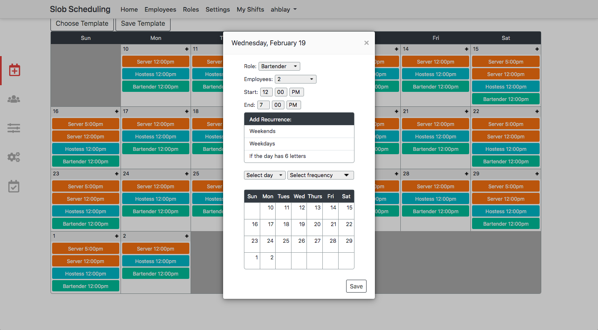
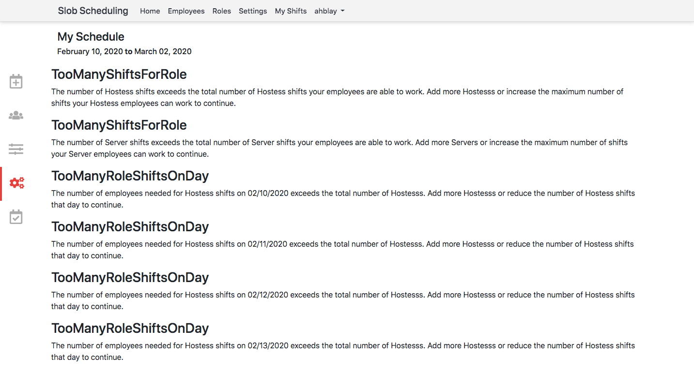

All of the code for the inital foray can be found on GitHub at https://github.com/ahblay/webssapp. The code for the reboot is set to private on the off-chance that this becomes a viable business.
The Initial Foray
The impetus for this project came from the research of my former classmate Aaron Slobodin, who wrote
this paper on a linear
programming solution to the employee scheduling problem. Along with his classmate Will Bernoudy, Aaron designed and
built a desktop application for employee scheduling using the Python library Kivy. Shortly after this application was
deployed at a health clinic in the summer of 2017, my friend Andrew Laird and I spoke to Aaron and Will about
upgrading the scheduler to an online, web-based service. That service is the topic of this article.
When we began the project of designing and implementing a web app, both Andrew and I had relatively little knowledge of web development technologies. Especially for me, nearly every task introduced entirely foreign concepts, syntactic difficulties and complex design challenges. However, rather than walk through every step of the project, in the following paragraphs I will select what I recall to be particularly representative examples of the struggles and successes that we encountered along the way.
Perhaps the single most irritating, infuriating and time-consuming task I faced during the web design phase of this project was building a calendar interface that users could use to build schedules. Questions associated with this step were wide-ranging in scope and depth. They included:
- How do design a calendar? How do you show a schedule that spans two months? How big is too big? How do you show exactly how many days you want without a bunch of empty ones?
- How do you enter data into the calendar? How do you visualize that data? How much flexibility do you make available to the user? Can a user color-code entries? What colors can they choose from?
- How do you make sure that your user won't break the schedule? What do you do when the user inevitably does break the schedule?
- How do you make schedule-design as tolerable and easy as possible?
- How do you preserve calendar data in a database and quickly render it back into a calendar? When do you save changes made by a user? How do you make that process as smooth as possible?

×

Glazing over the fact that this schedule doesn't entirely make sense in the real world, I believe that its design
largely does address all of the above questions. Let's get into it.
It seems that the issue of a schedule spanning multiple months really isn't that significant. By providing the schedule dates at the top of the calendar and in each calendar cell, I believe that it is adequately clear to a user which month they are in. Size, however, was a continual source of frustration. The number of shifts per day is practically always larger than the space available in a calendar cell. The natural solution to this problem is to enable scrolling in calendar cells; this is what we ultimately settled on. However, I was never totally sold on this choice. My fear is that users will forget that the hidden shifts have been entered and subsequently create schedules that have extra or otherwise unexpected shifts. This seems to be a fundamental difficulty with UX design. When building interfaces, you have to remember that there is a line beyond which it is no longer your responsibility to prevent poor decisions. The challenge is to decide where to draw that line.
Building the calendar to a user-specified length was annoying, albeit mostly due to my relative inexperience re: web development at that point. If you want to create a calendar of known length, one simple approach is to subdivide your webpage into a grid using CSS. Then, you simply style each cell in your grid with borders and a date and whatever else you want in your calendar. Rinse and repeat for 7 \times 5 = 35 cells and you have a calendar of appropriate length for any month. However, if your calendar can be any length, you can't pre-set the number of rows to, say, 5. The solution, which is retrospectively quite clear, is to use Javascript (or in our case, JQuery) to build each calendar row incrementally until we reach the correct size. This is what I did. However, each calendar cell contains quite a lot of HTML and CSS, and at the time all of this structural code was embedded and created within JQuery. It is, perhaps, worth asking whether there is a more elegant (i.e. readable) solution.
So what exactly is all the HTML and CSS inside of each calendar cell? How is data entered into the calendar? Included below is a screenshot of the shift entry modal: 
×

These are the options:
- A role dropdown menu with user-created roles from the roles tab (elsewhere on the site).
- The number of employees in a given role and shift (set to an arbitrary maximum of 9).
- Start and end time dropdowns.
- Buttons and dropdowns to select recurring shifts (including a facetious "if the day has 6 letters" option).
- A miniature calendar with clickable days to select when shifts should occur.
×

In all the menus for shift creation and editing, we (very intentionally) ensured that users were only able to add
information that already existed elsewhere on the site. This was essential to avoid a circumstance where, for instance,
a user creates a new role (say "interior decorator") for one of their shifts, but fails to associate any employees
with that role (since the role of "interior decorator" only appears in the calendar). Unfortunately, even with such
precautions, there are ways to design impossible schedules. As a simple example, suppose you run a cafe and have
employees filling the roles of barista and dishwasher. At your cafe (a quaint neighborhood establishment), you have
three baristas (Mandy, Kaylin and Joe) and one dishwasher (Larry). Now, when setting up your schedule in the calendar
view, it would be possible to create a dishwasher shift that requires two employees, even though Larry is your only
(fiercely territorial) dishwasher. As such, you have created an impossible schedule. To notify users of this situation
(or, technically speaking, when your schedule data violates a constraint (in this case, we are violating the
"employees can only work one shift at a time" constraint)), we built an errors tab; this allows users to fix
impossible schedules before attemping to optimize them. The errors page is shown below:

×

It is perhaps overdue that I present an overview of how this entire schedule creation process works. Let's do that now.
The Overview
- Create an account. Your account is associated with a business.
- Add roles. These are the roles that your business requires (e.g. dishwasher, server, etc.).
- Add employees. Each employee has the following information: name, training (y/n), roles, minimum shifts (per week), maximum shifts (per week), seniority, and inactive (y/n).
- Create a schedule. Select a date range for your schedule and input the shifts that you require for each of the days. Enter (or request your employees to enter) their work preferences for each eligible role, day and shift.
- Optimize your schedule. Make any necessary changes.
The basic idea (which is presented in greater detail with better mathematical justification in the paper I linked at the beginning of this article) is to reformulate a schedule as a linear equation and solve this linear equation for the highest (or lowest) value whilst being restricted by certain constraints. In our case, the linear equation will look something like this:
\text{score} = a_1x_1 + a_2x_2 + a_3x_3 + ... + a_nx_n.
Here, x_i is a variable representing a unique combination of an employee working on a certain
day in a certain role in a certain shift. For example, this could be Larry working on Monday as a dishwasher from 8AM
to 4PM. This variable will be assigned a value of 1 if Larry is working and 0 if he is not. The value
a_i represents Larry's preference to work that specific role/day/shift combination. This means
that the number of terms in our equation will be the product:
n_{\text{employees}} \times n_{\text{roles}} \times n_{\text{days}} \times n_{\text{shifts}}.
Now, in order to solve this equation we do not immediately begin iterating over all possible combinations of 1s and 0s
for these variables. Recall that there are certain impossible (constraint-breaking) combinations (e.g. Larry working
two shifts at once). Each of these constraints must be described programmatically. As an example, "employees can only
work one shift at a time" can be written (in high-level pseudocode):
for every employee/day/shift combination:
sum = 0
for every role:
sum += employee/day/shift/role
sum <= 1